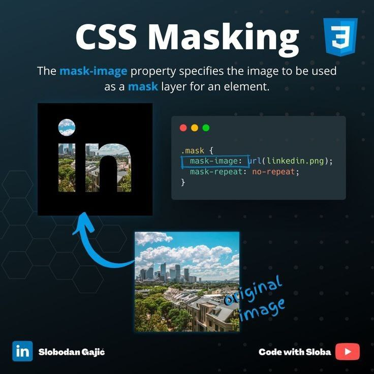
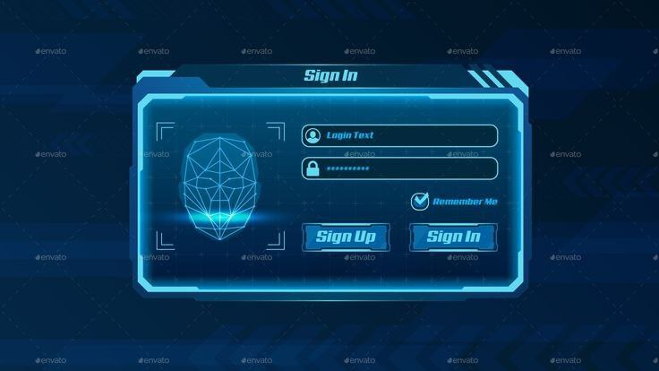
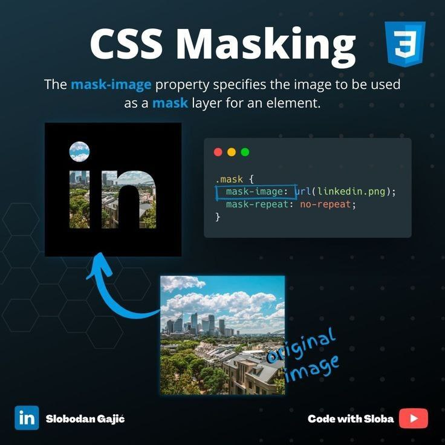
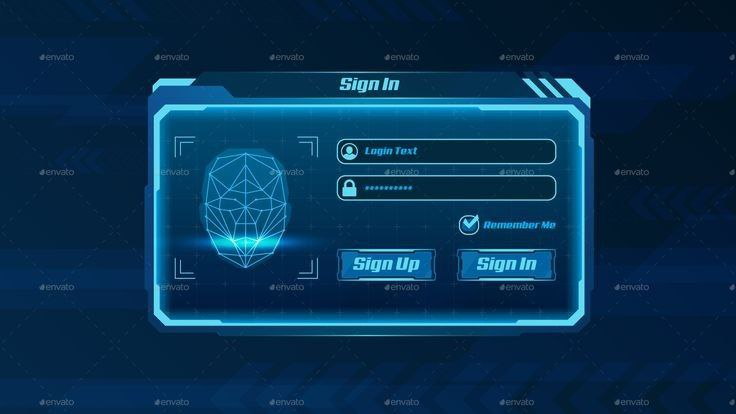
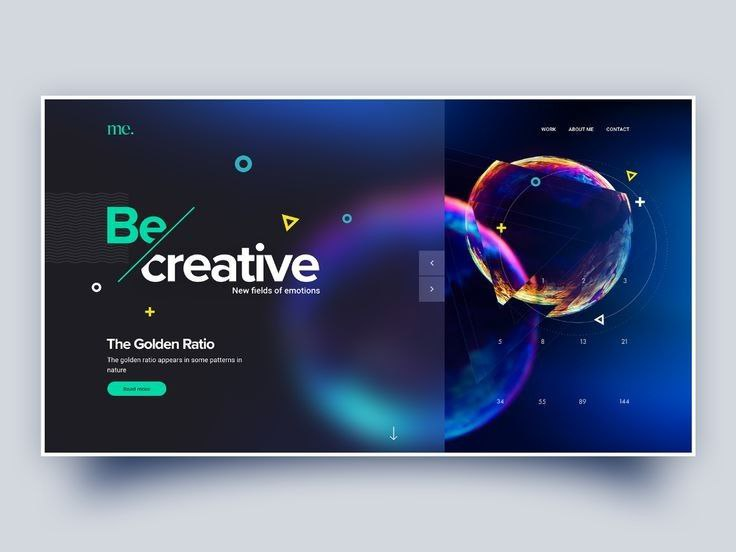
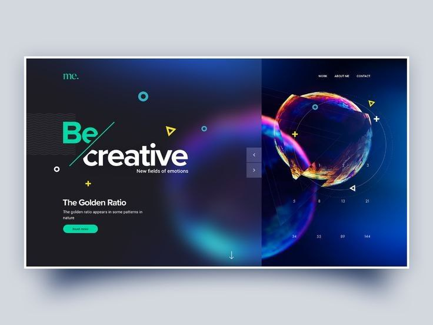

Web development is the work involved in developing a website for the Internet
(World Wide Web) or an intranet (a private network).
[1] Web development can range from developing a simple
single static page of plain text to complex web applications,
electronic businesses, and social network services.
To become a web developer, start with the subjects below,
in the following order:
 

 
